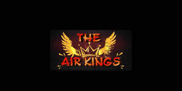

Trade Mark Journal No.2026/005 30 January 2026
UK00004325083 16 January 2026 (41)

- Class 41
- Entertainment; Theatre entertainment; Television entertainment; Cinema entertainment; Musical entertainment; Interactive entertainment; Music entertainment services; Entertainment services; Television entertainment services; Education, entertainment and sports; Sports entertainment services; Radio entertainment; Cabaret entertainment services; Musical entertainment services; Live entertainment; Tv entertainment services; Interactive entertainment services; Nightclub services [entertainment]; On-line entertainment; Booking of entertainment; Entertainment services in the nature of arranging social entertainment events; Radio entertainment services; Live entertainment services; Corporate entertainment services; Hospitality services (entertainment); Popular entertainment services; Corporate hospitality (entertainment); Entertainment services in the nature of organizing social entertainment events; Provision of musical entertainment; Cinematographic entertainment services; Audio entertainment services; Entertainment club services; Club entertainment services; Club services [entertainment]; Video entertainment services; Education, entertainment and sport services; Provision of entertainment; Jazz music entertainment services; Animated musical entertainment services; Television and radio entertainment services; Radio and television entertainment services; Entertainment in the nature of theater productions; Organising of entertainment; Artistic management of entertainment venues; Entertainment services for children; Production of live entertainment; Television and radio entertainment; Radio and television entertainment; Radio entertainment production; Entertainment in the nature of dinner theater productions; Entertainment services in the form of cinema performances; Entertainment, sporting and cultural activities; Online entertainment services; Organisation of musical entertainment; Services for the production of entertainment in the form of television; Live entertainment production services; Production of television entertainment features; Online interactive entertainment; Children's entertainment services; Arranging of musical entertainment; Entertainment in the nature of television news shows; Production of audio entertainment; Entertainment booking services; Lighting productions for entertainment purposes; Musical group entertainment services; Provision of live entertainment; Internet radio entertainment services; Hosting of entertainment events; Production of live entertainment events; Video game entertainment services; Entertainment in the nature of circuses; Arranging of visual entertainment; Live demonstrations for entertainment; Entertainment services relating to sport; Social club services for entertainment purposes; Entertainment services relating to esports; Entertainment services in the nature of competitions; Holiday centre entertainment services; Entertainment services in the form of television programmes; Night club services [entertainment]; Entertainment services in the nature of interactive television programmes; Arranging of competitions for education or entertainment; Staged light entertainment services; Provision of radio and television entertainment services; Arranging of festivals for entertainment purposes; Entertainment services in the nature of contests; Exhibition services for entertainment purposes; Entertainment in the nature of dance performances; Fan club services (entertainment); Organization of entertainment events; Arranging of visual and musical entertainment; Production of television entertainment programmes; Entertainment services in the nature of sporting events; Production of films for entertainment purposes; Preparation of entertainment programmes for the cinema; Arranging of entertainment shows; Entertainment services provided by television; Entertainment services in the nature of video games; Entertainment services in the nature of an amusement park show; Production of live entertainment features; Provision of entertainment services through the media of television; Conducting of entertainment events; Road shows being entertainment services; Film production for entertainment purposes; Entertainment services in the form of concert performances; Organisation of entertainment services; Services providing entertainment in the form of live musical performances; Entertainment in the form of live musical performances (Services providing -); Entertainment in the nature of fashion shows; Festivals (Organisation of -) for entertainment purposes; Presentation of live entertainment events; Production of live television programmes for entertainment; Entertainment services for producing live shows; Entertainment services in the nature of a wrestling club; Entertainment in the form of television programmes (Services providing -); Providing entertainment information; Escape game [entertainment]; Cultural, educational or entertainment services provided by art galleries.
Underwraps Event Choreography Limited